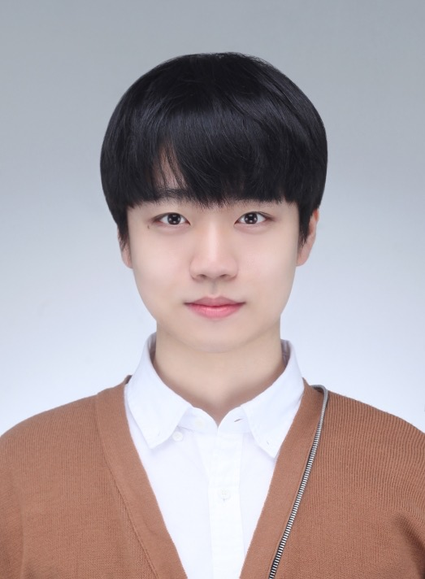

🙋🏻 왜 컴퓨터과학과 복수 전공을 희망하나요❓
처음에는 전공과 관련된 데이터분석 분야로 막연히 python 코딩을 시작했습니다. 그러다 단순히 데이터분석을 이용해서 창업경험을 쌓고 싶어서 21-1학기에 AI스타트업이라는 창업 교과를 수강했었는데, 예상치 못하게 데이터분석보다 실제 앱을 구현하는 'FrontEnd & BackEnd개발분야'의 매력에 빠져버렸습니다. 그 후 혼자서 AWS Azure GCP같은 cloud환경 및 여러가지 Framework들을 공부하다가 뒤늦게 CS 기본기의 중요성을 체감하고 차근차근 컴과 핵심과목을 밀도있게 수강하기 위해서 컴퓨터과학과 복수전공을 희망하게 되었습니다. 이번학기엔 FrontEnd와 BackEnd를 모두 아우르는 인터넷프로그래밍을 잡아서 너무나도 다행이라고 생각하고 성실히 과정에 임해서 충분히 성장할 수 있도록 하겠습니다!🙋🏻 어떤 진로를 목표로하나요❓
음, 구체적으로 딱 정하지 못하겠습니다. 컴퓨터과학과 관련된 일들은 너무 흥미로운게 많아서 지금은 구체적으로 "이 길을 꼭 가겠어!" 이렇게 결정하기가 쉽진 않네요. 정말 흥미로운 분야가 다양하게 있지만, 그 중에서 몇 가지 골라보자면 클라우드 환경을 구축하는 DeavOps 개발, 서버를 다루는 BackEnd 개발, AI연구 그 중에서도 특히 자연어처리 연구에 관심이 쏠리는 것 같아요😀 전부 다 잘할 수 없으니 나중에는 하나를 선택해야겠지만, 학교를 다닐 때만큼은 조금씩은 다 경험해보고자 합니다.🙋🏻 본인을 소개할 수 있는 매체가 있을까요❓
🙋🏻 어떻게 생겼는지 궁금해요❗️
-
과잠 입고 한강공원에서 찍은 사진

-
증명 사진

🙋🏻 이번학기 시간표 좀 보여주세요❗️
| ⏰시간표⏰ | ||||||
|---|---|---|---|---|---|---|
| 월 | 화 | 수 | 목 | 금 | 토 | |
| 9 | 탐색적자료분석 | |||||
| 10 | 인터넷프로그래밍 | 인터넷프로그래밍 | 탐색적자료분석 | |||
| 11 | ||||||
| 12 | 수학과프로그래밍 | 수학과프로그래밍 | ||||
| 1 | 서양문화의 유산 | |||||
| 2 | 서양문화의 유산 | |||||
| 3 | 바이오시스템과환경 | |||||
| 4 | ||||||
| 5 | 시계열분석 | |||||
| 6 | 바이오시스템과환경 | |||||
| 7 | ||||||